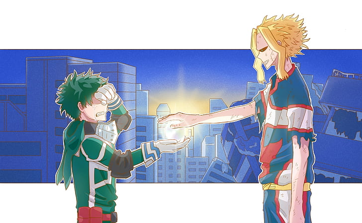

The story of My Hero Academia is set in a world where currently most of the human population has gained the ability to develop superpowers called "Quirks", which occur in children within the age of four: it is estimated that around 80% of the world population has a Quirk. There are an endless number of Quirks, and it is extremely unlikely to find two people who have the exact same power, unless they are closely related. Among the Quirk-enhanced individuals, a few of them earn the title of Heroes, who cooperate with the authorities in rescue operations and apprehending criminals who abuse their powers, commonly known as Villains. In addition, Heroes who excel on their duties gain celebrity status and are recognized as "Pro Heroes".
